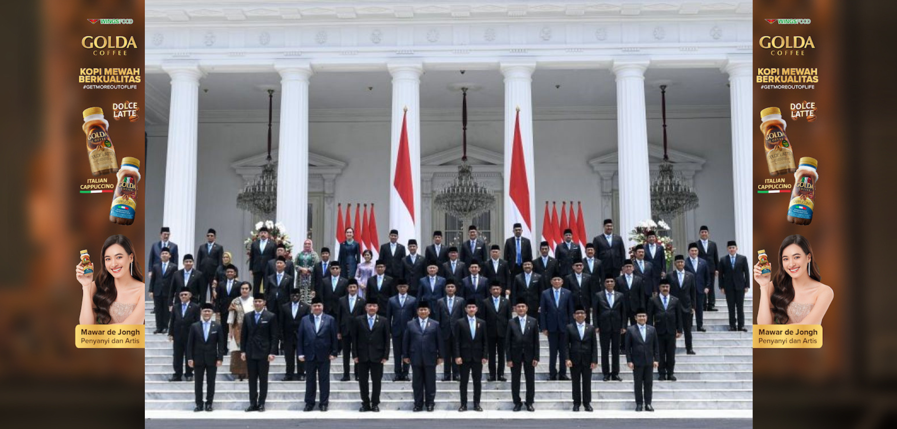

Prabowo Subianto resmi dilantik sebagai Presiden Republik Indonesia ke-8 menggantikan Joko Widodo. Dalam upacara yang digelar di Gedung MPR/DPR RI, Prabowo menggantikan Joko Widodo (Jokowi) yang telah menjabat selama dua periode sejak 2014. Pelantikan ini mengukir babak baru dalam sejarah politik Indonesia, dengan Prabowo mengambil alih tampuk kepemimpinan negara.
Prabowo Subianto bukanlah sosok yang asing di panggung politik Indonesia. Karirnya dimulai di dunia militer, di mana ia mencapai pangkat Letnan Jenderal dan menjabat sebagai Danjen Kopassus. Setelah pensiun dari militer, Prabowo memasuki dunia politik dan sempat mencalonkan diri sebagai presiden beberapa kali sebelum akhirnya terpilih pada Pemilu 2024. Setelah sekian kali mencoba, akhirnya pada tahun 2024 Prabowo berhasil memenangkan pemilihan presiden dengan suara mayoritas. Kemenangan ini dianggap sebagai hasil dari strategi politik yang matang, popularitas yang terus meningkat, serta kerja keras dalam menjalin koalisi dengan partai-partai politik besar di Indonesia.
Tidak hanya menandai era baru dalam kepemimpinan, tetapi juga diikuti dengan pembentukan kabinet yang memicu banyak perbincangan. Salah satu isu yang menjadi sorotan utama adalah munculnya beberapa nama menteri yang dianggap tidak memiliki latar belakang sesuai dengan kementerian yang mereka pimpin. Hal ini kemudian memunculkan istilah "Kabinet Balas Budi," merujuk pada anggapan bahwa beberapa posisi diberikan sebagai imbalan politik kepada pendukung Prabowo dalam pemilu.
Selain kontroversi mengenai pengangkatan beberapa menteri yang dianggap tidak sesuai dengan latar belakang mereka, kabinet Presiden Prabowo Subianto juga menghadapi kritik terkait jumlah kementerian yang membengkak menjadi 48. Penambahan jumlah kementerian ini memicu kekhawatiran di kalangan masyarakat dan pengamat politik, yang menilai bahwa hal tersebut berpotensi membebani Anggaran Pendapatan dan Belanja Negara (APBN) dan membuat pemerintahan menjadi kurang efisien
Kabinet Prabowo Subianto terdiri dari 48 kementerian, jauh lebih banyak dibandingkan kabinet sebelumnya di era Presiden Joko Widodo yang terdiri dari 34 kementerian. Penambahan ini dianggap sebagai upaya untuk mengakomodasi berbagai kelompok politik yang mendukung Prabowo dalam Pemilu 2024, serta memenuhi janji politik terhadap partai-partai koalisi dan tokoh-tokoh berpengaruh yang berperan dalam kemenangan Prabowo.
Namun, langkah ini memicu banyak pertanyaan mengenai efektivitas dan efisiensi pemerintahan. Penambahan jumlah kementerian tentu akan berdampak pada alokasi anggaran yang lebih besar, mengingat setiap kementerian membutuhkan dana operasional, staf, fasilitas, dan sumber daya lainnya. Dalam situasi ekonomi yang belum sepenuhnya pulih pasca-pandemi, kebijakan ini dipandang dapat memperburuk beban keuangan negara.
Penggabungan Kementerian Koordinator Bidang Politik, Hukum, dan Keamanan (Polhukam) sering jadi perdebatan. Banyak yang merasa keamanan lebih dekat ke hukum daripada politik, sehingga lebih baik dipisahkan. Namun, struktur ini tetap dipertahankan karena dianggap efektif menjaga stabilitas nasional. Penunjukan Budi Gunawan sebagai Menko Polhukam juga jadi sorotan. Pengalamannya sebagai Kapolri dan Kepala BIN dinilai akan membantu menangani urusan keamanan dan politik. Meskipun keterlibatannya di bidang siber kurang relevan, hubungan dekatnya dengan Megawati mungkin menjadi alasan penting di balik penunjukan ini.
Penempatan Imigrasi di bawah Kementerian Hukum dan HAM memang terasa agak janggal bagi sebagian orang, tapi selebihnya masih masuk akal. Yusril Ihza Mahendra, yang punya rekam jejak luar biasa di bidang hukum, merupakan pilihan yang tepat. Saya bahkan berani mengatakan bahwa dari segi kompetensi hukum, Yusril bisa bersaing dengan Prof. Mahfud MD. Kedekatannya dengan Prabowo sudah lama terjalin, dan ini menjadi alasan kuat mengapa dia diangkat dalam kabinet. Secara keseluruhan, penunjukan Yusril adalah pilihan yang solid menurut saya.
Sebagai mantan Ketua Umum Golkar dan Menko Perekonomian petahana, sosok ini punya jejak politik dan ekonomi yang panjang. Dalam lima tahun terakhir, catatan kinerjanya terbilang campur aduk, meskipun kedekatannya dengan kalangan bisnis dan pasar saham sangat terlihat. Secara pribadi, saya tidak pernah punya perasaan positif terhadap beliau—mungkin ini hanya prasangka saya saja. Namun, bagi sebagian orang, pengaruh dan relasinya di dunia bisnis dianggap sebagai aset penting untuk mempertahankan stabilitas ekonomi nasional.
Penunjukan Pratikno sebagai Menteri Koordinator PMK cukup mengejutkan. Latar belakang akademiknya memang kuat, terutama di bidang pemerintahan, tapi posisinya sebagai Menko PMK rasanya kurang tepat. Dia memang profesor dan seorang pendidik, tapi ada banyak opsi lain yang mungkin lebih relevan untuk posisi ini. Penunjukan ini jelas karena kedekatannya dengan Jokowi, tangan kanan presiden selama bertahun-tahun. Apakah ini keputusan yang buruk? Mungkin. Tapi lima tahun terakhir, posisi Menko PMK sendiri kurang menonjol dan kerjanya tidak begitu terlihat di mata publik, jadi sulit untuk berharap banyak.
Penunjukan Agus Harimurti Yudhoyono (AHY) sebagai Menteri Koordinator Bidang Infrastruktur dan Wilayah juga tampak lebih sebagai jabatan politis. Latar belakang AHY yang lebih kuat di militer dan politik terasa kurang pas untuk memimpin sektor infrastruktur yang sangat teknis. Pengalaman praktisnya di bidang ini juga minim, apalagi jika dibandingkan dengan sosok seperti Basuki Hadimuljono, yang memiliki rekam jejak panjang dan solid di bidang infrastruktur. Ini jelas keputusan yang kurang tepat menurut saya, karena pilihan lain dengan latar belakang yang lebih relevan sebenarnya tersedia. Rasanya penunjukan ini lebih didorong oleh pertimbangan politik daripada kompetensi teknis.
Penunjukan Muhaimin Iskandar sebagai Menteri Koordinator Pemberdayaan Masyarakat juga menimbulkan tanda tanya besar. Pertanyaannya adalah, bagaimana sebenarnya kementerian ini berbeda dari PMK? Terlihat bahwa ini lebih kepada jabatan politis ketimbang posisi yang didasarkan pada kompetensi. Rekam jejak Cak Imin (Muhaimin Iskandar) yang murni di ranah politik membuat banyak orang meragukan kesesuaiannya dengan tugas yang seharusnya lebih fokus pada pemberdayaan masyarakat. Ini jelas merupakan pilihan yang kurang tepat, dan jika Menko baru ini tidak menunjukkan kinerja yang baik, mungkin akan menjadi keputusan yang dipertanyakan di masa mendatang.
Penunjukan Zulhas sebagai Menteri Koordinator Urusan Pangan juga mengundang kritik. Sekali lagi, ini tampaknya lebih kepada jabatan politis. Kinerjanya sebagai Menteri Perdagangan sebelumnya kurang memuaskan, terutama terkait banyaknya izin impor tekstil dari China yang merugikan industri tekstil lokal. Saya sering berkelakar bahwa dia lebih mirip "Mendag China" ketimbang mendag untuk kepentingan dalam negeri. Tentu saja, ini merupakan pilihan yang buruk, karena seharusnya ada banyak sosok lain yang jauh lebih kompeten dalam urusan pangan, agrikultur, dan agraria yang bisa diandalkan untuk mengatasi tantangan ini. Penunjukan seperti ini bisa jadi menghambat upaya peningkatan ketahanan pangan nasional.
Penunjukan Prasetyo Hadi sebagai Menteri Sekretaris Negara (Mensesneg) cukup menarik. Sebagai didikan Prabowo sejak SMA Taruna Nusantara, ia memiliki latar belakang yang dekat dengan dunia militer dan politik. Meskipun track record-nya lebih kuat di bidang kehutanan, posisi Mensesneg memang lebih berfokus pada tugas administratif dan sebagai tangan kanan presiden, sehingga tidak selalu memerlukan kemampuan teknis yang spesifik. Dengan demikian, bisa dibilang ini bukan pilihan yang buruk. Namun, jika dibandingkan dengan Pratikno, penunjukan ini terasa seperti langkah mundur, karena Pratikno membawa pengalaman akademis dan birokrasi yang lebih mapan.
Penunjukan Tito Karnavian sebagai Menteri Dalam Negeri (Mendagri) untuk periode kedua tidak terlalu mengejutkan. Dengan pengalaman panjang sebagai Kapolri, Tito memiliki jaringan dan pemahaman yang cukup dalam mengenai dinamika keamanan dan pemerintahan daerah, yang tentu membantu dalam mengurus 37 provinsi di Indonesia. Meski kinerjanya di Mendagri tidak terlalu menonjol selama periode sebelumnya, pengalamannya membuatnya tetap pilihan yang bisa diterima. Ini mungkin bukan pilihan yang inspiratif, tapi juga bukan keputusan yang buruk—lebih ke arah pilihan yang "ya, sudah tepat."
Penunjukan Budi Arie sebagai Menteri Koperasi menimbulkan banyak tanda tanya. Dengan latar belakang di media dan jurnalistik, penugasan ini terasa jauh dari keahlian dan pengalamannya. Rasanya, ia akan lebih cocok sebagai Kepala Pers Kepresidenan daripada menangani sektor koperasi yang punya kompleksitas tersendiri. Penempatan ini malah seolah menginspirasi penunjukan serupa seperti Meutya Hafid di Kementerian Komunikasi Digital. Ditambah lagi, pemisahan Kementerian Koperasi dan UMKM juga terlihat tidak efektif, seakan hanya untuk memberi ruang bagi jabatan Budi Arie. Secara keseluruhan, ini merupakan keputusan yang sangat tidak tepat dan bisa berdampak negatif pada pengembangan koperasi dan UMKM ke depan.